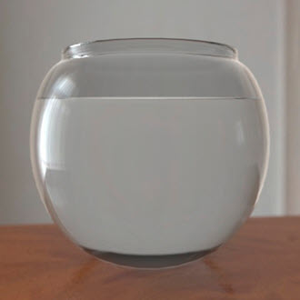
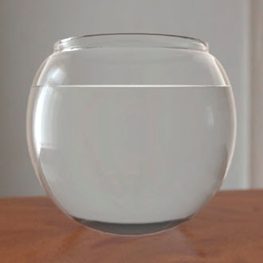
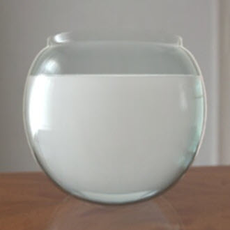
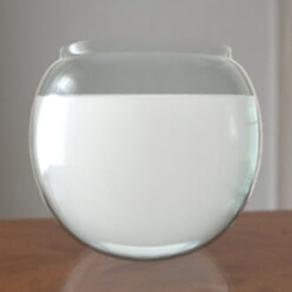

下面是准确对玻璃和水进行着色时使用的设置。
将 base_weight 设置为 0，并将 specular_weight 增加到 1。将 IOR 更改为玻璃的 IOR (1.5)。将 transmission_weight 增加到 1。
减小 transmission_weight 值会使穿过玻璃体积的光发生衰减（基于距离的颜色变化）。默认情况下，transmission_color 是白色，意味着没有基于距离的染色。试着将透射从全白色调低。
|  |  |
| 透射颜色：灰色 | 透射颜色：白色 |
重复使用对玻璃材质使用的设置。但是，确保将“折射率”(Index of Refraction)设置为水的折射率 1.33。
现在创建乳白色液体，它有助于添加少量次表面散射。此外，为了让液体看起来更生动，可以尝试向它添加少量 emission_weight。
|  |  |
| SSS 权重：0.1 | SSS 权重：0.1。自发光：0.1 |